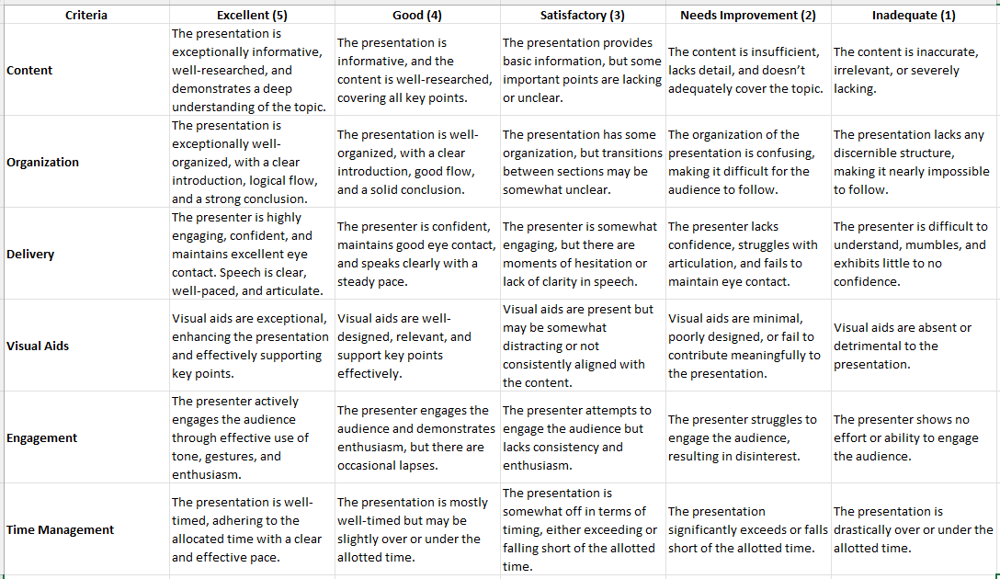
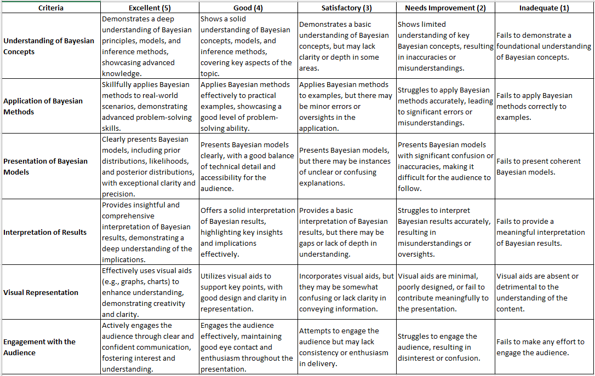
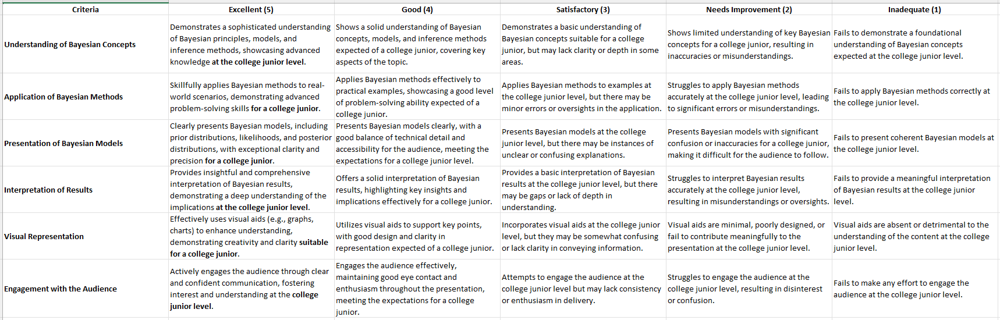
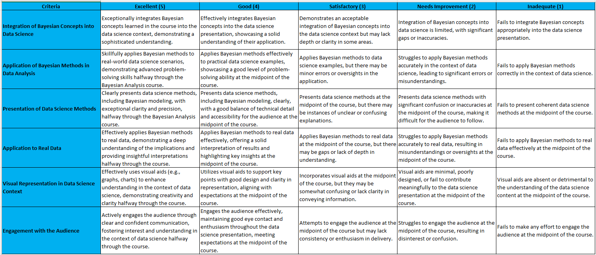

Today we will talk about grading rubrics in a couple of ways
- using AI tools to generate a grading rubric
- creating a grading rubric to assess AI-aided assignments
Here are some resources (YouTube videos)
Creating a Grading Rubric
Following that first resource, let us try out ChatGPT for today’s endeavors. Aside: I have been enjoying the natural language skills employed by pi.ai, but ChatGPT currently has the ability to make tables and arrange thoughts into tables better.
Initial Request
Thinking ahead to my next semester, I am wondering how I can structure in-class presentations among my students and myself.
- Prompt: “Create a grading rubric for an in-class presentation”

Note: when I was writing this blog post, I had already used ChatGPT for some other queries and drafts, so it might already be “trained” to my preferences. You might need to include something like “in table form” to get the nice tables to appear.
At this point, I am satisfied in the point-totals and clear descriptions. I myself might alter the categories or weight them differently later.
After each generated result, ChatGPT includes a disclaimer such as the following:
“Feel free to adapt this rubric to suit the specific requirements and expectations of your class or assignment. Adjust the criteria or weighting based on the emphasis you want to place on different aspects of the presentation.”
Course Context
Since I am currently planning out my course for next semester, perhaps I can assemble a rubric that is particular for my course.
- Prompt: “Create a grading rubric for an in-class presentation for Bayesian Analysis”

I am once again impressed by the use of appropriate concepts and the breadth of the categories. The last one (“engagement”) sounds more like a teaching demostration instead of a student presentation. Furthermore, I would need to adjust these expectations for the middle of the semester and the end of the semester.
Student Context
Perhaps I can get a refined result by mentioning how capable my students will be.
- Prompt: “Create a grading rubric for an in-class presentation by college juniors for Bayesian Analysis”

Alas, this effort seemed to merely add “for a college junior” to many of the previous results.
Breadth Context
Perhaps I can refine the table my mentioning more about the course materials.
- Prompt: “Create a grading rubric for an in-class presentation about data science halfway through a course in Bayesian Analysis”

I am leaning toward these directions where my course is not isolated but rather a part of a larger field or major.
This is the message that ChatGPT included:
“This rubric is designed to assess the progress and proficiency of students in integrating Bayesian concepts into the context of data science at the midpoint of the course. Adjustments can be made based on the specific learning objectives and expectations of your course.”
Assessing AI-Aided Assignments
Next, I want to come at all of this in a different direction. If I ask my students to use AI to aid their production of a deliverable, how would I then assess what they turn in?
- Prompt: “How do I grade an assignment where artificial intelligence tools were prescribed?”
| Criteria | Excellent (5) | Good (4) | Satisfactory (3) | Needs Improvement (2) | Inadequate (1) |
|---|---|---|---|---|---|
| Understanding of AI Concepts | Demonstrates a deep understanding of AI concepts relevant to the assigned task. | Shows a solid understanding of AI concepts, with few minor misconceptions. | Understands the basics of AI concepts but may have some significant gaps in understanding. | Demonstrates limited understanding of key AI concepts. | Fails to demonstrate a basic understanding of AI concepts. |
| Tool Selection and Justification | Selects appropriate AI tools based on the task and justifies the choice effectively. | Chooses suitable AI tools, with clear reasoning for the selection. | Selects AI tools but may not provide a thorough justification for the choices. | Selects tools that are not well-suited for the task or lacks a clear rationale. | Fails to choose appropriate AI tools or provides no justification. |
| Implementation of AI Tools | Implements AI tools with a high degree of accuracy, efficiency, and creativity. | Successfully implements AI tools with few minor errors or inefficiencies. | Implements AI tools but may encounter some significant errors or inefficiencies. | Struggles with the implementation, resulting in noticeable errors. | Fails to implement AI tools effectively, with substantial errors. |
| Results and Analysis | Analyzes AI-generated results comprehensively, demonstrating a deep understanding of implications. | Provides a solid analysis of results, highlighting key insights and implications. | Offers a basic analysis of results but may lack depth or overlook important aspects. | Struggles to analyze results accurately, resulting in misunderstandings. | Fails to provide a meaningful analysis of AI-generated results. |
| Documentation and Presentation | Presents the assignment clearly and professionally, with thorough documentation and effective communication. | Communicates effectively, with well-organized documentation and a clear presentation. | Presents the assignment adequately but may lack organization or clarity in documentation. | Documentation is disorganized, and the presentation lacks clarity. | Fails to document the assignment adequately, with a poorly structured or confusing presentation. |
| Adherence to Guidelines and Requirements | Strictly adheres to all guidelines and requirements specified for the assignment. | Generally follows guidelines and requirements, with only minor deviations. | Follows some guidelines, but there may be significant deviations or omissions. | Deviates from guidelines in ways that impact the quality of the assignment. | Fails to follow most or all of the specified guidelines and requirements. |
| Creativity and Innovation | Demonstrates exceptional creativity and innovation in the application of AI tools. | Shows creativity in the use of AI tools, contributing to the overall quality of the assignment. | Demonstrates some creativity, but the application is somewhat routine. | Lacks creativity in the application of AI tools. | Fails to demonstrate any creativity in the assignment. |
Oddly enough, ChatGPT all of a sudden presented the results as Markdown tables (which are great for blog posts like this one but not as accessible for people who do not program in Markdown.)
This is the message that ChatGPT included:
“Additional Considerations:
Peer Review: Consider incorporating a peer review component where students provide feedback on each other’s work.
Real-World Relevance: Assess how well the assignment reflects real-world applications of AI tools and the practical implications of the results.
Ethical Considerations: Encourage students to consider ethical implications related to the use of AI tools and incorporate ethical reasoning into their work.
Feedback: Provide constructive and specific feedback on both strengths and areas for improvement.
Adjust the weighting of each criterion based on your course objectives and the specific focus of the assignment. This holistic approach allows for a comprehensive evaluation of students’ proficiency in applying AI tools to real-world problems.”
Pi AI
Asking a classic search engine such as Google for help with AI-assisted assignments led to many results about AI grading—programs such as Gradescope—which is a story for another time. Instead, let me check back in with Pi AI.
Absolutely, Derek! Here are a few pointers for evaluating assignments that use AI tools:
- Focus on the student’s thought process and the originality of their ideas, rather than the output of the AI tool.
- Look for evidence that the student has critically engaged with the AI-generated output, rather than simply accepting it as fact.
- Encourage students to cite any AI-generated content appropriately, just as they would with any other source.
- Consider including AI-assisted work as an additional element of the assignment, rather than the sole focus.
Sure thing! Here’s a basic rubric for assessing AI-assisted work:
- Criteria 1: Originality of ideas: Does the student demonstrate an ability to generate unique, original thoughts, or are their ideas merely a regurgitation of AI-generated content?
- Criteria 2: Critical engagement: Does the student demonstrate a deep understanding of the AI-generated content, or do they blindly accept it as fact?
- Criteria 3: Appropriate citation: Did the student properly cite the AI-generated content, or did they claim it as their own work?
- Criteria 4: Balance between human and AI contribution: Is the work primarily driven by the student’s original ideas, or does it lean too heavily on AI-generated content?